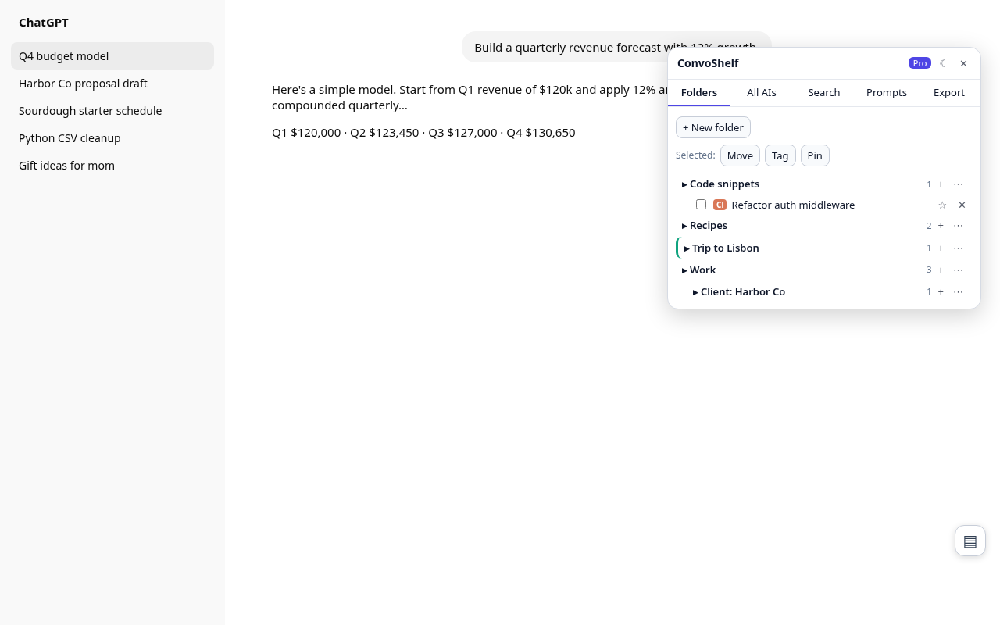
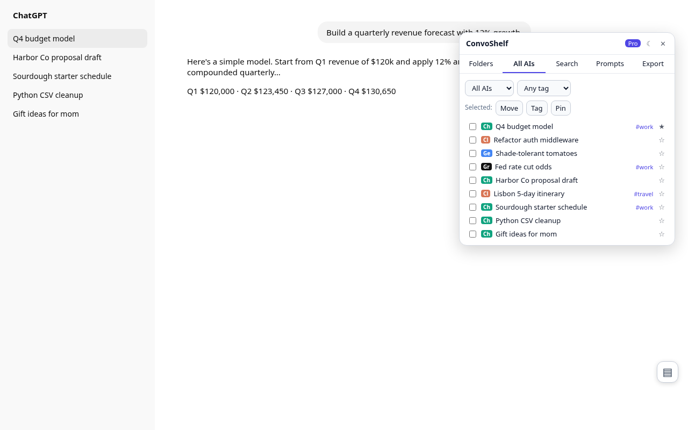
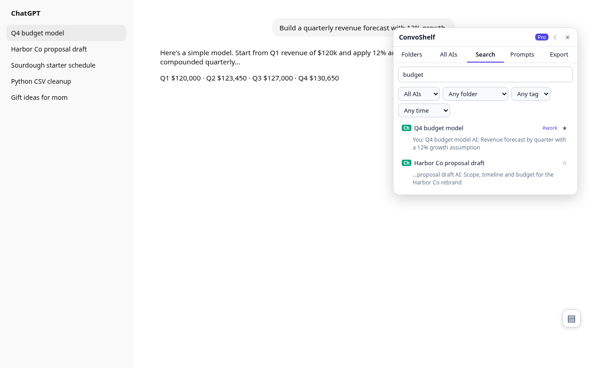
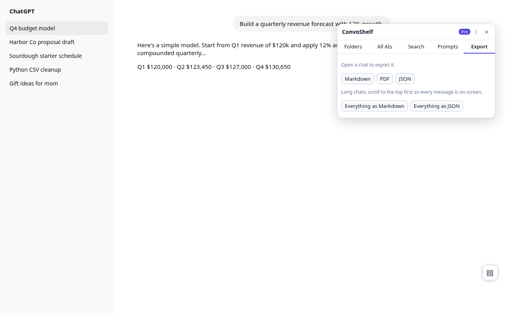

How to organize your ChatGPT chats (and Claude, Gemini, Grok)
Updated October 18, 2026 · 7-minute read
To organize ChatGPT chats, use Projects for a few big topics, archive what you're done with, and add a folder extension if you also use Claude, Gemini or Grok. This guide is for anyone whose sidebar has become a long list of "New chat" entries. Use ChatGPT for a few months and the sidebar turns into hundreds of chats, half of them called "New chat". Use Claude, Gemini or Grok as well and your history is split across four sites that don't talk to each other. This guide covers what each AI gives you out of the box and where those tools stop. Then it shows how to get real folders, tags and search inside your chats across all four with a free Chrome extension.
Disclosure: ConvoShelf is our product. The built-in options below are worth trying first, and for light use they may be all you need.
What each AI has built in
All four keep changing their sidebars, so check the current version on each site. As of October 2026 this is roughly the picture:
| AI | Built-in organizing | Where it stops |
|---|---|---|
| ChatGPT | Projects (chats grouped with shared files and instructions), chat search, archive, rename. | No nested folders. A chat belongs to one project. No tags. Bulk export is the full account data export, delivered by email. |
| Claude | Projects with a knowledge base, starred chats, chat search, rename. | No folders inside projects and no tags. History stays on claude.ai. |
| Gemini | Pinned chats, chat search, rename, Gems for reusable instructions. | No folders or tags. A pin is the only way to set chats aside. |
| Grok | Chat history with search, and projects/workspaces on grok.com. | No nested folders or tags. Separate from everything else. |
The bigger gap is between the sites. Each one only knows about its own chats. If you researched a trip in Claude and built the budget in ChatGPT, no built-in tool puts those two chats side by side.
Free workarounds that help
- Rename chats as you go. A title like "Q3 budget - formulas" beats the auto-title every time you scroll.
- Use Projects for big, ongoing work. ChatGPT and Claude Projects are good when a set of chats shares files and instructions.
- Archive or delete throwaway chats. A shorter list is easier to scan.
- Keep a notes doc of links. It's manual and it falls behind, but it works across sites.
How to organize all four with ConvoShelf
ConvoShelf is a Chrome extension that adds a panel to chatgpt.com, claude.ai, gemini.google.com and grok.com. Folders, tags and search live in that panel, so they work the same on every site and hold chats from all four in one place. It takes about five minutes to set up.
- Install ConvoShelf. Add ConvoShelf to Chrome from the Chrome Web Store. It asks for access to chatgpt.com, claude.ai, gemini.google.com and grok.com only.
- Open the panel. Go to any of the four sites and press Alt+Shift+S, or click the ConvoShelf icon. The panel opens next to the site's own sidebar.
- Create folders. Click New folder. Nest folders up to three levels, e.g. Work > Client A > Proposals.
- File your chats. Drag a chat from the site's sidebar onto a folder, or press + in the panel to file the chat you have open. Chats inside ChatGPT Projects work the same way.
- Add tags and pins. Tag chats that cut across folders (e.g. #prompt, #code) and pin the few you return to daily.
- Search inside your chats. Press Alt+Shift+F and type a word or phrase. Results come from the text of every chat you've opened, from all four AIs, in one list.
- Export what you need. Open a chat and press Export to save it as Markdown or PDF. Use Backup in settings now and then to keep a JSON copy of your folders.



A folder setup that works
- By area: Work, Personal, Learning, Writing. Add subfolders per client or course.
- Tags for type: #prompt, #code, #draft, #reference. A tag can cross folders, so your code snippets turn up together no matter which project they came from.
- Pins for today: the three or four chats you're actively using.
Things to know
- Search covers chats you've opened since installing. Open an old chat once and it gets indexed.
- For long chats, scroll to the top before exporting so every message has loaded.
- Everything is stored locally. Use Backup now and then, and before you switch computers or uninstall.
- If a site changes its layout, the ConvoShelf popup's Self-check shows which site needs a fix, so nothing breaks silently.

Free vs Pro
Free: unlimited folders, tags, pins, full-text search, single-chat Markdown/PDF export, 10 saved prompts, dark mode, backup and restore. Pro is $4.99 once, with no subscription. It adds export of a whole folder or every chat (Markdown or JSON), search filters by AI, folder, tag and date, multi-select move/tag/pin, folder colors and unlimited prompts. See pricing.
Add ConvoShelf to Chrome Free · no account
FAQ
Can you make folders in ChatGPT?
Not true nested folders. ChatGPT Projects group chats under a project with shared files and instructions, but a chat sits in one project and there are no subfolders. ConvoShelf adds nested folders (three levels deep) on top of the ChatGPT sidebar, and they work for chats inside Projects too.
How do I search inside old ChatGPT or Claude chats?
Both sites have a built-in chat search. ConvoShelf adds one search box over every chat you've opened in ChatGPT, Claude, Gemini and Grok, and it matches the words inside the messages. A chat gets indexed the first time you open it, so open older chats once to make them searchable.
Can I keep ChatGPT and Claude chats in the same folder?
Yes, with ConvoShelf. Folders aren't tied to one site, so a Claude chat and a ChatGPT chat can sit in the same folder and show up in one list.
Does ConvoShelf upload my chats anywhere?
No. There's no account and no ConvoShelf server. Folders, tags and indexed chat text live in your browser's local extension storage. The only network call is a license check with Polar, and only if you buy Pro.
What happens if I uninstall the extension?
Chrome removes the extension's local storage. Use Backup in settings first to save a JSON file, then Restore it later. Your chats on ChatGPT, Claude, Gemini and Grok aren't touched either way.
How do I export a ChatGPT chat to PDF or Markdown?
Open the chat, scroll to the top so every message loads, then press Export in the ConvoShelf panel and pick Markdown or PDF. PDF opens Chrome's print dialog, so choose Save as PDF. Pro adds export of a whole folder or every chat at once.
Is ConvoShelf free?
Folders, tags, pins, full-text search, single-chat export and 10 saved prompts are free. Pro costs $4.99 once, with no subscription, and adds bulk export, search filters, multi-select, folder colors and unlimited prompts.
Related
- Claude Duet: what it carries over from your Claude account
- How to back up your Claude chats before a suspension
- ChatGPT locked chats: how they work, and what a PIN reset deletes
- ConvoShelf home · ConvoShelf FAQ · Compare chat organizers · Privacy policy
- X Bookmarks Shelf: search, folders and export for your X bookmarks
- Saved Shelf: search and keep your saved Reddit posts past the 1,000-item cap
- Watch Later Shelf: search, filter and bulk-clean YouTube Watch Later